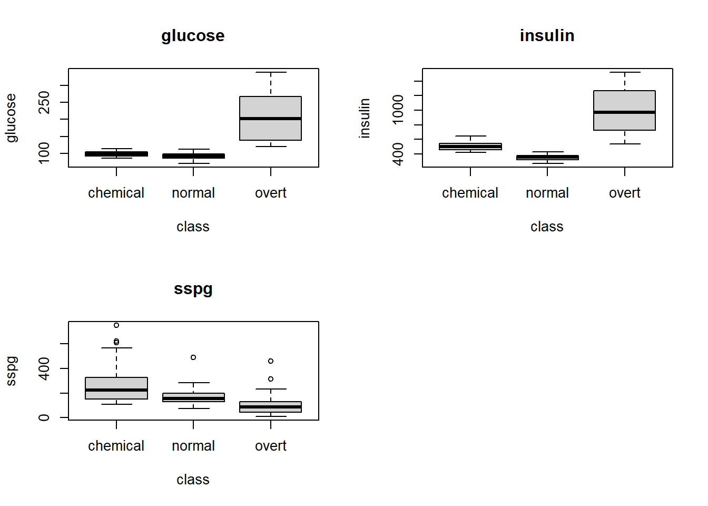

glm_default_2 <-glm( default ~ balance + income + student, data = Default, family ='binomial')eta <-summary(glm_default_2)$coef[,1] %*%c(1, 2000, 40000, 1)1/ (1+exp(-eta))
[,1]
[1,] 0.5196218
Clasificador de Bayes
El clasificador de Bayes asigna una observación a la clase más probable, dado los valores de los predictores.
Propiedades
Tiene la tasa de error de prueba más pequeña.
Por lo general, no conocemos la verdadera distribución condicional \(Pr(Y| X)\) para datos reales.
Función pérdida: A las clasificaciones erróneas se les asigna la pérdida \(1\); y, a las clasificaciones correctas, \(0\) . Esta es conocida como pérdida-0/1.
\[
Average \left( I \left( y_i \ne \hat{y}_i \right) \right)
\]
Suponemos que un buen clasificador es aquel que tiene un error de prueba bajo.
Dos paradigmas
Paradigma de diagnóstico:
Se estima directamente la distribución a posteriori para las clases: \(Pr(Y = k \mid X = x)\)
Ejemplos: Regresión logística, Clasificación KNN
Paradigma de muestreo:
Enfoque indirecto:
Modele la distribución condicional de predictores, para cada clase: \(f_k (x) = Pr(X = x \mid Y = k)\)
Considere las probabilidades a priori: \(\pi_k = Pr(Y = k)\)
Clasificar en la clase con el producto máximo \(pi_k f_k (x)\)
¿Cómo obtenemos \(Pr(Y 0= k \mid X = x_0)\)? Teorema de Bayes:\[
p_k (X) = Pr(Y = k \mid X = x) =
\dfrac{Pr(X = x \cap Y = k)}{f(x)} =
\dfrac{f_k (x) \pi_k}{\sum_{l=1}^{k}f_l (x) \pi_l}
\]
Proposition 1 No es recomendable usar los mismos datos de test para comparar modelos. Esto puesto que un modelo podría presentar menor test-error que otro, para un mismo test dataset, debido al azar.
Análisis Discriminante
El enfoque es modelar la distribución de \(X\) en cada una de las clases por separado, y, luego usar el teorema de Bayes para obtener \(Pr(Y \mid X)\).
par(mfrow =c(2,2))boxplot(glucose ~ class, data = diabetes, main ="glucose")boxplot(insulin ~ class, data = diabetes, main ="insulin")boxplot(sspg ~ class, data = diabetes, main ="sspg")par(mfrow =c(1,1))

Análisis Discriminante Lineal
# Estimaciónlibrary(MASS)
Warning: package 'MASS' was built under R version 4.1.3
Attaching package: 'MASS'
The following object is masked from 'package:ISLR2':
Boston
lda1 =lda(class ~., data = diabetes)lda1
Call:
lda(class ~ ., data = diabetes)
Prior probabilities of groups:
chemical normal overt
0.226087 0.573913 0.200000
Group means:
glucose insulin sspg
chemical 99.46154 504.1154 291.7692
normal 91.98485 351.2121 169.0152
overt 207.17391 1002.9565 112.6087
Coefficients of linear discriminants:
LD1 LD2
glucose -0.035130542 -0.056150421
insulin 0.013748266 0.009876402
sspg 0.001344232 0.005489825
Proportion of trace:
LD1 LD2
0.8526 0.1474
# Predicciónplda1 =predict(lda1, diabetes)$class# Matriz de confusion (entrenamiento)table(plda1, diabetes$class)
plda1 chemical normal overt
chemical 19 1 5
normal 7 65 2
overt 0 0 16
Confusion Matrix and Statistics
Reference
Prediction chemical normal overt
chemical 19 1 5
normal 7 65 2
overt 0 0 16
Overall Statistics
Accuracy : 0.8696
95% CI : (0.794, 0.9251)
No Information Rate : 0.5739
P-Value [Acc > NIR] : 6.334e-12
Kappa : 0.7644
Mcnemar's Test P-Value : 0.009308
Statistics by Class:
Class: chemical Class: normal Class: overt
Sensitivity 0.7308 0.9848 0.6957
Specificity 0.9326 0.8163 1.0000
Pos Pred Value 0.7600 0.8784 1.0000
Neg Pred Value 0.9222 0.9756 0.9293
Prevalence 0.2261 0.5739 0.2000
Detection Rate 0.1652 0.5652 0.1391
Detection Prevalence 0.2174 0.6435 0.1391
Balanced Accuracy 0.8317 0.9006 0.8478
Selección de Variables
library(klaR)
Warning: package 'klaR' was built under R version 4.1.3
greedy.wilks(class ~., data = diabetes)
Formula containing included variables:
class ~ insulin + glucose + sspg
<environment: 0x000000002e63c008>
Values calculated in each step of the selection procedure:
vars Wilks.lambda F.statistics.overall p.value.overall F.statistics.diff
1 insulin 0.2469409 170.77488 9.665240e-35 170.774879
2 glucose 0.1532280 86.28294 4.190502e-44 33.943348
3 sspg 0.1311418 64.58470 7.641367e-46 9.262795
p.value.diff
1 9.665240e-35
2 2.994049e-12
3 1.904104e-04
# Validación Cruzadaset.seed(666)stepclass( diabetes[,-4], diabetes$class, method ="lda", criterion ="AC",# Consideramos una mejora significativa # como de 10%, pero esta es una elección arbitrariaimprovement =0.10)
`stepwise classification', using 10-fold cross-validated accuracy of method lda'.
115 observations of 3 variables in 3 classes; direction: both
glucose insulin sspg class
1 89 472 162 chemical
2 96 465 237 chemical
3 112 503 408 chemical
4 110 477 124 chemical
5 90 413 344 chemical
6 102 472 297 chemical
# Evaluación en el conjunto de testpredlda =predict(lda2, diabetes_test)$classcaret::confusionMatrix(predlda, diabetes_test$class)
Confusion Matrix and Statistics
Reference
Prediction chemical normal overt
chemical 3 1 0
normal 7 9 0
overt 0 0 10
Overall Statistics
Accuracy : 0.7333
95% CI : (0.5411, 0.8772)
No Information Rate : 0.3333
P-Value [Acc > NIR] : 8.752e-06
Kappa : 0.6
Mcnemar's Test P-Value : NA
Statistics by Class:
Class: chemical Class: normal Class: overt
Sensitivity 0.3000 0.9000 1.0000
Specificity 0.9500 0.6500 1.0000
Pos Pred Value 0.7500 0.5625 1.0000
Neg Pred Value 0.7308 0.9286 1.0000
Prevalence 0.3333 0.3333 0.3333
Detection Rate 0.1000 0.3000 0.3333
Detection Prevalence 0.1333 0.5333 0.3333
Balanced Accuracy 0.6250 0.7750 1.0000
Ejemplo práctico QDA
# Estimaciónqda1 =qda(class ~., data = diabetes)# Predicciónpqda1 =predict(qda1, diabetes[-4])$class# Matriz de confusion (entrenamiento)caret::confusionMatrix(pqda1, diabetes$class)
Confusion Matrix and Statistics
Reference
Prediction chemical normal overt
chemical 22 1 2
normal 3 65 0
overt 1 0 21
Overall Statistics
Accuracy : 0.9391
95% CI : (0.8786, 0.9752)
No Information Rate : 0.5739
P-Value [Acc > NIR] : < 2.2e-16
Kappa : 0.8938
Mcnemar's Test P-Value : NA
Statistics by Class:
Class: chemical Class: normal Class: overt
Sensitivity 0.8462 0.9848 0.9130
Specificity 0.9663 0.9388 0.9891
Pos Pred Value 0.8800 0.9559 0.9545
Neg Pred Value 0.9556 0.9787 0.9785
Prevalence 0.2261 0.5739 0.2000
Detection Rate 0.1913 0.5652 0.1826
Detection Prevalence 0.2174 0.5913 0.1913
Balanced Accuracy 0.9062 0.9618 0.9511
# Evaluación en el conjunto de testpredrda =predict(rda2, diabetes_test)$classcaret::confusionMatrix(diabetes_test$class, predrda)
Confusion Matrix and Statistics
Reference
Prediction chemical normal overt
chemical 7 2 1
normal 0 10 0
overt 0 0 10
Overall Statistics
Accuracy : 0.9
95% CI : (0.7347, 0.9789)
No Information Rate : 0.4
P-Value [Acc > NIR] : 1.698e-08
Kappa : 0.85
Mcnemar's Test P-Value : NA
Statistics by Class:
Class: chemical Class: normal Class: overt
Sensitivity 1.0000 0.8333 0.9091
Specificity 0.8696 1.0000 1.0000
Pos Pred Value 0.7000 1.0000 1.0000
Neg Pred Value 1.0000 0.9000 0.9500
Prevalence 0.2333 0.4000 0.3667
Detection Rate 0.2333 0.3333 0.3333
Detection Prevalence 0.3333 0.3333 0.3333
Balanced Accuracy 0.9348 0.9167 0.9545
Naive Bayes
Método popular cuando se tiene una gran cantidad de predictores.
Suponemos que en cada clase, los predictores son independientes, (supuesto de independencia condicional dentro de clases).
Es un método escalable, es decir, no pierde eficiencia cuando se aumenta la cantidad de predictores (más columnas).
Rápidamente genera predicciones de clasificaciones, comparado a otros modelos.
No es tan útil para inferencia.
Cuando las distribuciones marginales son respecto a una un predictor numérico continuo, se supone que tal predictor sigue una distribución normal univariada.